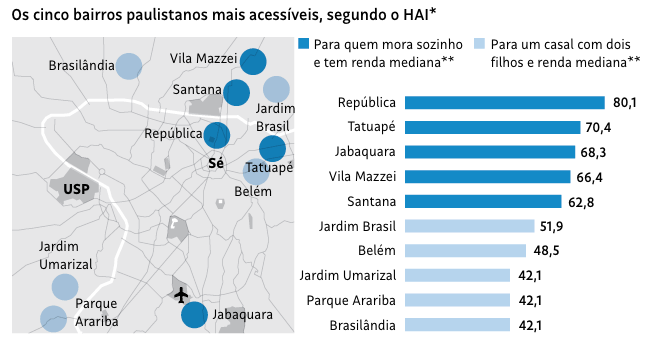
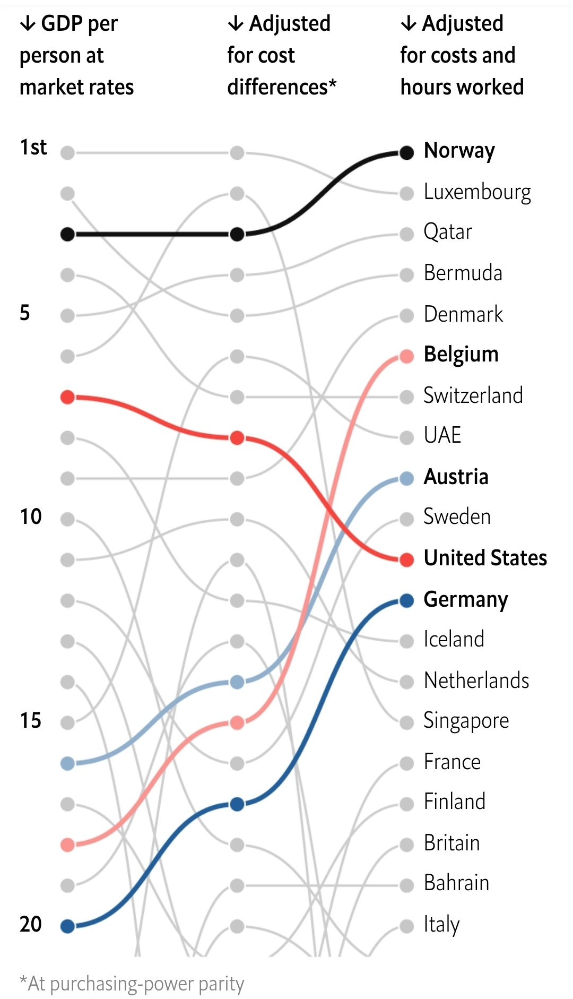

library(ggplot2)
library(stringr)
library(forcats)
library(dplyr)
library(tidyr)
library(showtext)
library(patchwork)
showtext_auto()Setup
Abaixo segue a lista com os principais pacotes que utilizo neste post. Eventualmente, outros pacotes como o ggtext ou sidrar são utilizados, mas deixo isto sinalizado.
# Para fins de replicabilidade
sessionInfo()Folha de SP
A visualização abaixo vem da Folha de São Paulo em matéria publicada em outubro de 2021. A matéria foi baseada num estudo que participei que tentava mensurar a acessibilidade financeira à moradia em São Paulo. Usando preços de anúncios online e microdados de renda, mensurei a maior (ou menor) acessibilidade via um indicador chamado HAI (housing affordability index). Neste

Neste exemplo vamos reproduzir apenas o gráfico de colunas. Para reproduzir o gráfico, copio os dados diretamente da imagem e tento chegar em tons de azul similares ao da imagem original. Não faço ideia qual a fonte que a Folha utiliza; usei a “Roboto” por ser relativamente similar e de fácil acesso.
Dados
Code
#> Dados do HAI
dados <- tibble::tribble(
~nome, ~hai, ~type,
"República", 80.1, 1L,
"Tatuapé", 70.4, 1L,
"Jabaquara", 68.3, 1L,
"Vila Mazzei", 66.4, 1L,
"Santana", 62.8, 1L,
"Jardim Brasil", 51.9, 0L,
"Belém", 48.5, 0L,
"Jardim Umarizal", 42.1, 0L,
"Parque Arariba", 42.1, 0L,
"Brasilândia", 42.1, 0L
)
dados <- dados |>
mutate(nome = factor(nome), nome = fct_reorder(nome, hai))
#> Cores dos grupos
cores <- c("#B9D4EE", "#348ACA")
#> Adiciona a fonte Roboto
font_add_google("Roboto", "Roboto")Replicando o gráfico
Básico
A primeira versão do gráfico contém apenas o essencial da imagem. Temos um gráfico de colunas, virado na horizontal, com labels de texto. Além disso, as cores estão variando por grupo e temos uma legenda de cores. Sem utilizar a função theme o resultado do gráfico fica próximo, mas ainda muito distante do original.
Code
ggplot(dados) +
geom_col(aes(x = nome, y = hai, fill = as.factor(type)), width = 0.5) +
geom_text(aes(x = nome, y = hai + 5, label = hai), color = "#000000") +
coord_flip() +
labs(x = NULL, y = NULL) +
scale_fill_manual(
name = "",
values = c("#B9D4EE", "#348ACA"),
labels = c(
"Para um casal com dois\nfilhos e renda mediana**",
"Para quem mora sozinho\ne tem renda mediana**")
)Completo
O código abaixo tenta chegar num resultado próximo ao da imagem original. Essencialmente, precisamos:
- Ajustar a cor do fundo.
- Remover as linhas de grade.
- Remover todas as informações dos eixos.
- Ajustar a posição da legenda.
- Mudar a fonte e a cor do texto.
Além destas mudanças, também deixo os números em negrito e uso a vírgula como separador de decimal. O resultado final segue abaixo. Eu utilizo theme_minimal como um template inicial.
Code
ggplot(dados) +
geom_col(
aes(x = nome, y = hai, fill = as.factor(type)),
width = 0.5
) +
geom_text(
aes(x = nome, y = hai + 5, label = format(hai, decimal.mark = ",")),
size = 4,
vjust = 0.5,
family = "Roboto",
color = "#000000",
fontface = "bold") +
scale_y_continuous(expand = c(0, 0), limits = c(NA, 95)) +
coord_flip() +
labs(x = NULL, y = NULL, title = "") +
scale_fill_manual(
name = "",
values = c("#B9D4EE", "#348ACA"),
labels = c(
"Para um casal com dois\nfilhos e renda mediana**",
"Para quem mora sozinho\ne tem renda mediana**")
) +
theme_minimal() +
theme(
#> Fundo branco
panel.background = element_rect(fill = "white", color = "white"),
plot.background = element_rect(fill = "white", color = "white"),
#> Remove as linhas de grade
panel.grid = element_blank(),
#> Aplica a fonte Roboto
legend.text = element_text(family = "Roboto", color = "#000000"),
#> Ajusta o texto no eixo-y
axis.text.y = element_text(
family = "Roboto",
color = "#000000",
size = 12,
vjust = 0.4),
#> Remove o texto no eixo-x
axis.text.x = element_blank(),
#> Aumenta. margem superior para dar espaço para a legenda
plot.margin = margin(t = 40, r = 5, b = 5, l = 5),
#> Ajusta a posição e direção da legenda
legend.position = c(0.15, 1.1),
legend.direction = "horizontal"
)Financial Times
O gráfico abaixo mostra a evolução trimestral do preço dos imóveis em alguns países da OCDE. Mais especificamente, os valores representam a variação real dos índices de preços imobiliários dos respectivos países; para comparar a evolução entre os países, os valores foram indexados no valor do primeiro trimestre de 2000. O gráfico foi publicado nesta matéria do Financial Times e foi publicado março de 2021.

Dados
Para reproduzir este gráfico, primeiro importo as séries via o pacote OECD. É preciso filtrar os países, limpar as datas e indexar os valores.
Code
library(OECD)
dataset <- "HOUSE_PRICES"
hp <- get_dataset(dataset)
countries <- c("CAN", "DEU", "USA", "ITA", "GBR", "FRA", "ESP")
dat <- hp |>
janitor::clean_names() |>
filter(ind == "RHP", cou %in% countries, stringr::str_length(time) > 4) |>
mutate(
date = zoo::as.Date(zoo::as.yearqtr(time, format = "%Y-Q%q")),
obs_value = as.numeric(obs_value)
) |>
filter(date >= as.Date("2000-01-01"), date <= as.Date("2022-10-01")) |>
select(country = cou, date, index = obs_value)
dat <- dat |>
mutate(reindex = index / first(index) * 100, .by = "country")
country_order <- dat |>
filter(date == max(date)) |>
arrange(desc(reindex)) |>
pull(country)
dat <- dat |>
mutate(country = factor(country, levels = country_order))Replicando o gráfico
Básico
Na sua essência, as duas linhas de código abaixo reproduzem o gráfico do Financial Times.
ggplot(dat, aes(x = date, y = reindex, color = country)) +
geom_line()Para recriar o gráfico vou precisar das cores das linhas. Tentei encontrar cores parecidas, mas os códigos abaixo não devem ser idênticos aos do gráfico original. Além disso, também preciso do nome - por extenso - dos países.
#> Cores
cores <- c(
"#1A48B0", "#EB5F8E", "#73DAE4", "#A1BC4B", "#2F8CC9", "#7B052D", "#BBB7B4")
#> Nomes dos países
country_labels <- c(
"Canada", "UK", "France", "US", "Spain", "Germany", "Italy"
)As quebras no eixo-x são um pouco difíceis de emular, pois elas fogem do comportamento padrão do ggplot2. Assim, eu preciso definir ela manualmente e ainda fazer um pequeno “hack”: essencialmente, eu crio um vetor que destaca os anos “cheios” (2000, 2005, … 2020) e coloca valores vazios nos anos intermediários.
date_breaks <- seq(as.Date("2000-01-01"), as.Date("2022-01-01"), by = "year")
date_labels <- c(date_breaks[c(1, 6, 11, 16, 21)])
labels_year <- format(date_labels, "%Y")
labs <- c(sapply(labels_year, function(x) {c(x, rep("", 4))}))
labs <- labs[1:length(date_breaks)]
labsEu mantive a ordem das cores, mas como a ordem dos países mudou com a atualização dos dados, elas não batem com as dos países no gráfico original.
Code
ggplot(dat, aes(x = date, y = reindex, color = country)) +
geom_line(linewidth = 1) +
scale_color_manual(name = "", values = cores, labels = country_labels) +
scale_y_continuous(position = "right") +
scale_x_date(breaks = date_breaks, labels = labs) +
labs(
title = "The divergent paths of house prices across countries",
subtitle = "Real house prices (Q1 2000 = 100)",
caption = "Source: OECD (replica FT)",
x = NULL,
y = NULL) +
theme_minimal()Completo
Para chegar num resultado mais próximo do original é necessário mexer em vários elementos temáticos. Como fonte, usei a Gill Sans.
Code
font_add("Gill Sans", "GillSans.ttc")
showtext_auto()
ggplot(dat, aes(x = date, y = reindex, color = country)) +
geom_line(linewidth = 1.1) +
scale_color_manual(name = "", values = cores, labels = country_labels) +
scale_y_continuous(position = "right") +
scale_x_date(breaks = date_breaks, labels = labs) +
labs(
title = "The divergent paths of house prices across countries",
subtitle = "Real house prices (Q1 2000 = 100)",
caption = "Source: OECD (replica)",
x = NULL,
y = NULL) +
guides(color = guide_legend(nrow = 1)) +
theme_minimal() +
theme(
#> Muda a cor do fundo do gráfico
plot.background = element_rect(fill = "#FEF1E4", color = NA),
#> Remove todos as linhas de grade intermediárias
panel.grid.minor = element_blank(),
#> Remove as linhas de grade "verticais" que partem do eixo-x
panel.grid.major.x = element_blank(),
#> Altera a cor das linhas de grade "horizontais" que partem do eixo-y
panel.grid.major.y = element_line(color = "#EAE3DF"),
#> Altera a fonte e a cor de todos os elementos textuais
text = element_text(family = "Gill Sans", color = "#686261"),
#> Ajusta o título do gráfico para ser maior e em preto
plot.title = element_text(size = 20, color = "#000000"),
#> Ajusta o tamanho da legenda
plot.subtitle = element_text(size = 12),
#> Ajusta a posição da "Fonte"
plot.caption = element_text(hjust = 0),
#> Altera o tamanho e a cor do texto nos eixos
axis.text = element_text(size = 11, color = "#6B6865"),
#> Aumenta as margens do gráfico
plot.margin = margin(rep(10, 4)),
#> Muda a cor do "tiquezinho" no eixo-x e deixa ele mais comprido
axis.ticks.x = element_line(color = "#EADFD8"),
axis.ticks.length = unit(7, "pt"),
#> Altera a posição da legenda
legend.position = c(0.4, 1)
)G1
Gráfico Original
A imagem é um gráfico de colunas que mostra a taxa de desemprego média mensal no Brasil. A rigor, cada mês é um trimestre móvel. Os dados são da PNAD/C do IBGE. Há dois desafios nesta visualização: primeiro, o eixo-x, que apresenta o trimestre móvel junto com o ano (abreviado) e está virado em 90 graus; segundo, o valor em percentual que aparece no topo da coluna.

Dados
Importo os dados diretamente da API do SIDRA, o sistema de consultas do IBGE, via o pacote sidrar. Para mais informações sobre este pacote consulte o meu post sobre.
Code
library(sidrar)
unemp <- sidrar::get_sidra(
6381,
variable = 4099,
period = "202206-202306"
)
#> Limpeza de dados
tbl_unemp <- unemp |>
# simplifica nome das colunas
janitor::clean_names() |>
# seleciona e renomeia colunas
select(
qtr = trimestre_movel_codigo,
date_label = trimestre_movel,
unemp = valor
) |>
# faz alguns ajustes estéticos nos dados
mutate(
date_label = str_remove(date_label, " 202[0-9]"),
date_label = str_trim(date_label),
date = as.Date(paste0(qtr, "01"), format = "%Y%m%d"),
year = lubridate::year(date),
date_label = str_glue("{date_label}/{substr(year, 3, 4)}"),
pct_label = paste(format(round(unemp, 1), decimal.mark = ","), "%")
)Replicando o gráfico
Básico
O código abaixo reproduz os elementos mais marcantes do gráfico acima. Note que eu crio um grupo artificial (fill = a) para forçar o gráfico a ter uma legenda de cores.
ggplot(tbl_unemp, aes(x = date_label, y = unemp, fill = "a")) +
geom_col(alpha = 0.9, width = 0.8) +
geom_hline(yintercept = 0) +
geom_text(
aes(label = pct_label),
size = 3,
position = position_stack(0.95),
hjust = 0.5,
color = "white"
) +
scale_y_continuous(breaks = 0:9, labels = \(x) paste0(x, "%")) +
scale_fill_manual(
name = "",
values = "#c6160d",
labels = "Índice no trimestre"
) +
theme_minimal() +
theme(
legend.position = "top",
legend.key = element_rect(color = NA),
axis.text.x = element_text(
angle = 90,
color = "gray50",
size = 10,
hjust = 1,
vjust = 1.5
)
)Completo
Para melhor reproduzir o gráfico, uso o pacote ggtext que me permite maior flexibilidade no título. Além disso utilizo um pequeno hack (key_glyph='point') para fazer com que a legenda de cores seja no formato de um círculo ao invés de um quadrado.
Code
library(ggtext)
ggplot(tbl_unemp, aes(x = date_label, y = unemp, fill = "a", color = "a")) +
geom_col(alpha = 0.9, width = 0.8, key_glyph='point') +
geom_hline(yintercept = 0) +
geom_text(
aes(label = pct_label),
size = 3,
position = position_stack(0.95),
hjust = 0.5,
color = "white"
) +
scale_y_continuous(breaks = 0:9, labels = \(x) paste0(x, "%")) +
scale_fill_manual(
name = "",
values = "#c6160d",
labels = "Índice no trimestre"
) +
scale_color_manual(
name = "",
values = "#c6160d",
labels = "Índice no trimestre"
) +
guides(color = guide_legend(override.aes = list(size = 5))) +
labs(
title = "<strong><span style='font-size:18px'>Evolução da taxa de desemprego no Brasil</span></strong><br>
<span style='font-size:16px'>Índice no trimestre</span>",
caption = "Fonte: IBGE",
x = NULL,
y = NULL) +
theme_minimal() +
theme(
legend.position = c(0.05, 1.1),
legend.key = element_rect(color = NA),
plot.background = element_rect(fill = "#ffffff", color = NA),
panel.background = element_rect(fill = "#ffffff", color = NA),
panel.grid.minor = element_blank(),
panel.grid.major.x = element_line(linetype = 2),
axis.text.x = element_text(angle = 90, color = "gray50", size = 10, hjust = 1.85, vjust = 1.5),
axis.ticks = element_blank(),
plot.title = element_textbox(margin = margin(t = 0, r = 0, b = 30, l = 0), hjust = 0)
)Nexo
Gráfico 1
O gráfico mostra o ciclo de recessões e expansões nos países da América Latina, desde 1900. Os dados são do projeto Maddison e a fonte para a matéria está aqui. Num post anterior mostrei como reproduzir este gráfico e os outros da matéria.

Dados
Existe um pacote com os dados do projeto Maddison, chamado maddisson, mas os dados estão um pouco defasados. Para o propósito de replicar o gráfico acima isto não é um problema, já que a série se encerra em 2016. Para atualizar o gráfico, contudo, é preciso baixar os dados manualmente do site. Felizmente, isto é bastante simples no R. O código abaixo mostra as duas opções.
# Usando o pacote
library(maddison)
mad <- maddison::maddison
# Para trabalhar com dados mais atualizados
library(readxl)
# url com a tabela em Excel
url <- "https://www.rug.nl/ggdc/historicaldevelopment/maddison/data/mpd2020.xlsx"
#> Cria um path temporario e tenta baixar os dados
temp_path <- tempfile("maddison.xlsx")
try(download.file(url = url, destfile = temp_path, mode = "wb", quiet = TRUE))
if (file.exists(temp_path)) {
mad <- readxl::read_excel(temp_path, sheet = 3)
}O código abaixo faz a manipulação de dados necessária. Seleciona-se os países manualmente e cria-se uma variável binária que indica se o país encontra-se em expansão ou recessão em cada ano.
latam_countries <- c(
"ARG", "BOL", "BRA", "CHL", "COL", "CUB", "DOM", "ECU", "GTM", "HND", "HTI",
"MEX", "PER", "VEN")
latam <- mad |>
# Filtra apenas as linhas dos países selecionados
filter(
countrycode %in% latam_countries,
year >= 1900
) |>
# Agrupa por país
group_by(country) |>
mutate(
# Calcula a variação do PIB per capita de cada país
d_gdppc = gdppc / lag(gdppc) - 1,
# Cria uma variável binária para indicar se houve crescimento
growth = factor(if_else(d_gdppc > 0, 1L, 0L)),
# Remove parêntesis e o texto dentro dele
country = str_remove(country, " \\(.+\\)"),
# Abrevia o nome da República Dominicana
country = str_replace(country, "Dominican Republic", "Dominican Rep."),
country = factor(country),
country = fct_rev(country)
) |>
ungroup()Replicando o gráfico
Básico
A visualização é, essencialmente, um gráfico de calor de clusters, isto é, são vários quadrados coloridos adjacentes. Para desenhar este gráfico utilizo o geom_tile. Note que também duplico o eixo-x e coloco linhas verticais tracejadas no gráfico. Para conhecer mais sobre este tipo de gráfico veja meu tutorial sobre mapas de calor.
ggplot(latam, aes(year, country)) +
geom_tile(aes(fill = growth), height = .85, width = 1) +
geom_vline(
xintercept = c(1900, 1925, 1950, 1975, 2000, 2016),
linetype = 2,
colour = "gray65"
) +
scale_x_continuous(
breaks = c(1900, 1925, 1950, 1975, 2000, 2016),
expand = c(0,0),
sec.axis = dup_axis()
)Completo
O gráfico completo faz algumas modificações na legenda de cores e diversas alterações temáticas no gráfico. O portal Nexo utiliza a fonte Gotham Rounded em algumas variantes. Para usar esta fonte é preciso tê-la instalada. Para evitar problemas, o código abaixo verifica se as fontes necessárias estão instaladas; caso contrário, usa-se a fonte Montserrat, do Google Fonts.
# Verifica a fonte do texto
dbfonts <- font_files()
nexo_fonts <- c("Gotham Rounded Bold", "Gotham Rounded Light")
cond <- str_glue("({nexo_fonts[1]})|({nexo_fonts[2]})")
check_fonts <- all(str_detect(dbfonts$family, cond))
font <- ifelse(check_fonts, "Gotham Rounded Bold", "Montserrat")
font_axis <- ifelse(check_fonts, "Gotham Rounded Light", "Montserrat")
font_title <- "Crimson Text"
if (check_fonts) {
# Adiciona as fonts Gotham Rounded Bold e Light
font_add("Gotham Rounded Bold", "Gotham Rounded Bold.otf")
font_add("Gotham Rounded Light", "Gotham Rounded Light.otf")
} else {
# Adiciona Montserrat caso as fontes Gotham nao estejam disponiveis
font_add_google("Montserrat", "Montserrat")
}
font_add_google("Crimson Pro", "Crimson Text")
showtext_auto()Code
ggplot(latam, aes(year, country)) +
geom_tile(aes(fill = growth), height = .85, width = 1) +
geom_vline(
xintercept = c(1900, 1925, 1950, 1975, 2000, 2016),
linetype = 2,
colour = "gray65"
) +
scale_x_continuous(
breaks = c(1900, 1925, 1950, 1975, 2000, 2016),
expand = c(0,0),
sec.axis = dup_axis()
) +
scale_fill_discrete(
breaks = c(0,1),
name = "VARIAÇÃO DO PIB NO MUNDO\nPor ano",
labels = c("PIB EM QUEDA", "PIB EM CRESCIMENTO"),
na.value = "gray90"
) +
labs(title = "América Latina", x = NULL, y = NULL) +
theme(
# Fundo do gráfico
panel.grid = element_blank(),
# Define as margens do gráfico
plot.margin = unit(c(1, 1, .5, 1), "cm"),
# Eixos
axis.text.y = element_text(vjust = .4),
axis.ticks = element_line(size = .4),
axis.text = element_text(family = font_axis, size = 8),
# Legenda
legend.position = "top",
legend.text = element_text(
size = 8,
colour = "gray20",
family = font
),
legend.title = element_text(
size = 12,
colour = "gray20",
family = font
),
# Título
plot.title = element_text(family = font_title, size = 18)
)Gráfico 2
O gráfico mostra o percentual de carteiras de habilitação por faixa etária e por sexo, no Brasio, em janeiro de 2024. Os dados são do Renach (Registro Nacional de Condutores habilitados). Link para a matéria original.
Gráfico Original

Dados
Já que nosso foco é somente em replicar a visualização, vamos copiar os dados diretamente da tabela. Haverá um pequeno erro de precisão no processo.
Code
# Copia os dados do gráfico
tabela <- tribble(
~age_label, ~masc, ~femi,
"18 a 30", 0.627, 0.373,
"31 a 40", 0.622, 0.378,
"41 a 50", 0.641, 0.359,
"51 a 60", 0.674, 0.326,
"61 a 70", 0.709, 0.291,
"71 ou +", 0.774, 0.291
)
# Formata os dados
dados <- tabela |>
pivot_longer(cols = -"age_label", names_to = "sex", values_to = "share") |>
mutate(
# Converte as variáveis categóricas para factor
sex = factor(sex,
levels = c("femi", "masc"),
labels = c("Feminino", "Masculino")
),
age_min = as.numeric(str_sub(age_label, 1, 2)),
age_label = factor(age_label),
age_label = fct_reorder(age_label, -age_min),
# Cria o label de percentual para facilitar
share_label = paste0(format(share * 100, decimal.mark = ","), "%")
)Replicando o Gráfico
Básico
Essencialmente, a visualização do Nexo é um gráfico de colunas deitado; o valor percentual de cada coluna é impresso nos cantos do gráfico e as cores representam os diferentes sexos. O código abaixo captura o essencial do gráfico.
Code
ggplot(dados, aes(age_label, share, fill = sex)) +
geom_col(position = "fill") +
geom_hline(yintercept = 0, lwd = 1) +
geom_hline(yintercept = 1, lwd = 1) +
geom_hline(yintercept = 0.5, linetype = 2, lwd = 0.25) +
geom_text(
data = filter(dados, sex == "Masculino"),
aes(age_label, 0.075, label = share_label),
color = "white"
) +
geom_text(
data = filter(dados, sex == "Feminino"),
aes(age_label, 0.925, label = share_label),
color = "white"
) +
coord_flip() +
scale_fill_manual(values = c("#40c2cf", "#22678c")) +
guides(fill = "none") +
theme_minimal() +
theme(
panel.grid = element_blank(),
panel.grid.minor = element_blank()
)Completo
O gráfico completo faz diversas alterações temáticas no gráfico. O portal Nexo utiliza a fonte Gotham Rounded em algumas variantes. Para usar esta fonte é preciso tê-la instalada. Para evitar problemas, o código abaixo verifica se as fontes necessárias estão instaladas; caso contrário, usa-se a fonte Montserrat, do Google Fonts.
O código abaixo replica o gráfico sem a legenda de cores e sem ajustar o alinhamento do título.
Code
ggplot(dados, aes(age_label, share, fill = sex)) +
geom_col(position = "fill") +
geom_hline(yintercept = 0, lwd = 1) +
geom_hline(yintercept = 1, lwd = 1) +
geom_hline(yintercept = 0.5, linetype = 2, lwd = 0.25) +
geom_text(
data = filter(dados, sex == "Masculino"),
aes(age_label, 0.1, label = share_label),
color = "white",
family = "Gotham Rounded Bold",
size = 5
) +
geom_text(
data = filter(dados, sex == "Feminino"),
aes(age_label, 0.9, label = share_label),
color = "white",
family = "Gotham Rounded Bold",
size = 5
) +
scale_y_continuous(
breaks = c(0, 0.5, 1),
labels = c("0%", "50%", "100%"),
position = "right"
) +
coord_flip() +
scale_fill_manual(values = c("#40c2cf", "#22678c")) +
guides(fill = "none") +
labs(
title = "Percentual de carteiras de habilitação",
subtitle = "POR FAIXA ETÁRIA, EM JANEIRO DE 2024",
x = NULL,
y = NULL
) +
theme_minimal() +
theme(
panel.grid = element_blank(),
panel.grid.minor = element_blank(),
axis.text.y = element_text(
size = 14,
color = "#000000",
family = "Gotham Rounded Bold"
),
axis.text.x = element_text(
size = 14,
color = "#747474",
family = "Gotham Rounded Light"
),
plot.title = element_text(
family = "Crimson Text",
size = 20,
face = "bold",
hjust = -0.25),
plot.subtitle = element_text(
family = "Gotham Rounded Medium",
size = 10,
hjust = -0.2
)
)Há várias maneiras de replicar a legenda do gráfico original. Talvez a mais simples seja usar algum software de edição de imagem. Uma solução usando apenas ggplot2 é criar um gráfico auxiliar, que contém a legenda e então compor os gráficos usando patchwork.
Code
# Gráfico com a legenda --------------------------------------------
# data.frame auxiliar para montar a legenda
df_aux <- tibble(
x = 1,
y = c(0.5, 0.5),
ypos = c(0.25, 0.75),
label = c("Masculino", "Feminino")
)
# Gráfico com a legenda de cores
p_legend <- ggplot(df_aux, aes(x, y, fill = label)) +
geom_col() +
geom_text(
aes(y = ypos, label = label),
color = "white",
family = "Gotham Rounded Bold",
size = 3) +
scale_fill_manual(values = c("#40c2cf", "#22678c")) +
guides(fill = 'none') +
coord_flip() +
theme_void()
# Gráfico principal --------------------------------------------
# Gráfico principal (sem título e sem subtítulo)
p_main <- ggplot(dados, aes(age_label, share, fill = sex)) +
geom_col(position = "fill") +
geom_hline(yintercept = 0, lwd = 1) +
geom_hline(yintercept = 1, lwd = 1) +
geom_hline(yintercept = 0.5, linetype = 2, lwd = 0.25) +
geom_text(
data = filter(dados, sex == "Masculino"),
aes(age_label, 0.075, label = share_label),
color = "white",
family = "Gotham Rounded Bold",
size = 5
) +
geom_text(
data = filter(dados, sex == "Feminino"),
aes(age_label, 0.925, label = share_label),
color = "white",
family = "Gotham Rounded Bold",
size = 5
) +
scale_y_continuous(
breaks = c(0, 0.5, 1),
labels = c("0%", "50%", "100%"),
position = "right"
) +
coord_flip() +
scale_fill_manual(values = c("#40c2cf", "#22678c")) +
guides(fill = "none") +
labs(x = NULL,y = NULL) +
theme_minimal() +
theme(
panel.grid = element_blank(),
panel.grid.minor = element_blank(),
axis.text.y = element_text(
size = 14,
color = "#000000",
family = "Gotham Rounded Bold"
),
axis.text.x = element_text(
size = 14,
color = "#747474",
family = "Gotham Rounded Light"
)
)
# Compor os gráficos -----------------------------------------------
# Coloca um espaço vazio acima do gráfico principal
panel <- plot_spacer() / p_main + plot_layout(heights = c(0.1, 0.9))
# Gráfico final
panel +
# Insere a legenda no espaço vazio acima do gráfico principal
inset_element(p_legend, left = -0.125, bottom = 1.1, right = 0.5, top = 1.2) +
# Adiciona título e subtítulo
plot_annotation(
title = "Percentual de carteiras de habilitação",
subtitle = "POR FAIXA ETÁRIA, EM JANEIRO DE 2024",
) &
# Ajusta fonte, tamanho e posição
theme(
plot.title = element_text(
family = "Crimson Text",
size = 20,
face = "bold",
hjust = 0.05),
plot.subtitle = element_text(
family = "Gotham Rounded Medium",
size = 10,
hjust = 0.040
)
)Gráfico 3
The Economist
Gráfico 1
Esta visualização da The Economist mostra um ranking da riqueza entre países. O artigo original discute diferentes maneiras de mensurar e de comparar a riqueza entre países. Vamos nos focar apenas no gráfico abaixo. Este gráfico mostra um ranking dos países mais ricos do mundo segundo três métricas.
Na primeira “coluna”, temos o PIB per capita a preços correntes convencional. Esta é a medida mais crua de riqueza disponível. Na segunda coluna temos o PIB per capita em paridade de poder de compra (PPC), que ajusta a medida do PIB per capita pelo “custo de vida” de cada país. Por fim, a última coluna ajusta o PIB per capita em PPC pela número médio de horas trabalhado em cada país. Note como esta medida eleva consideravelmente a posição de países europeus como Bélgica, Alemanha, Áustria e Dinamarca, enquanto derruba alguns países como EUA e Singapura.
Num post anterior, eu descrevi em maiores detalhes este tipo de gráfico.

Dados
Os dados originais estão disponíveis on GitHub da The Economist mas eu não consegui encontrar o código que gera o gráfico acima. Como resultado, vou tentar adivinhar quais colunas, de fato, são utilizadas no gráfico. Além disso, como a fonte da The Economist é proprietária vou utilizar a Lato, da Google Fonts.
Code
dat <- readr::read_csv("/Users/viniciusoike/Documents/GitHub/restateinsight/static/data/gdp_over_hours_worked_with_estimated_hours_worked.csv")
countries_sel <- c("Norway", "Belgium", "Austria", "United States", "Germany")
measures <- c("gdp_over_pop", "gdp_ppp_over_pop", "gdp_ppp_over_k_hours_worked")
sub <- dat |>
select(country, year, all_of(measures)) |>
na.omit()
ranking <- sub |>
filter(year == max(year)) |>
pivot_longer(cols = -c(country, year), names_to = "measure") |>
mutate(rank = rank(-value), .by = "measure")
ranking <- ranking |>
mutate(
highlight = if_else(country %in% countries_sel, country, ""),
highlight = factor(highlight, levels = c(countries_sel, "")),
is_highlight = factor(if_else(country %in% countries_sel, 1L, 0L)),
rank_labels = if_else(rank %in% c(1, 5, 10, 15, 20), rank, NA),
rank_labels = stringr::str_replace(rank_labels, "^1$", "1st"),
measure = factor(measure, levels = measures)
)
cores <- c("#101010", "#f7443e", "#8db0cc", "#fa9494", "#225d9f", "#c7c7c7")
df_gdp <- tibble(
measure = measures,
measure_label = c(
"GDP per person at market rates",
"Adjusted for cost differences*",
"Adjusted for costs and hours worked"
),
position = -1.5
)
df_gdp <- df_gdp |>
mutate(
measure = factor(measure, levels = measures),
measure_label = stringr::str_wrap(measure_label, width = 12),
measure_label = paste0(" ", measure_label)
)Replicando o gráfico
Básico
A versão simplificada do gráfico está resumida no código abaixo. Vale notar o uso da coord_cartesian para “cortar o gráfico” sem perder informação. Não é muito usual utilizar linewidth como um elemento estético dentro de aes mas pode-se ver como isto é bastante simples e como isto economiza algumas linhas de código, quando comparado com o gráfico anterior.
library(ggbump)
ggplot(ranking, aes(measure, rank, group = country)) +
geom_bump(aes(color = highlight, linewidth = is_highlight)) +
geom_point(shape = 21, color = "white", aes(fill = highlight), size = 3) +
geom_text(
data = filter(ranking, measure == measures[[3]]),
aes(x = measure, y = rank, label = country),
nudge_x = 0.05,
hjust = 0,
family = "Lato"
) +
coord_cartesian(ylim = c(21, -2)) +
scale_color_manual(values = cores) +
scale_fill_manual(values = cores) +
scale_linewidth_manual(values = c(0.5, 1.2))Completo
O objetivo deste post é de sempre fazer o máximo possível usando ggplot2 mas, na prática, as caixas de texto acima do gráfico podem ser feitas num software externo. Não é muito fácil usar caracteres especiais (neste caso, flechas) e a própria fonte (Lato) não inclui flechas em unicode. Pode-se melhorar a ordem da sobreposição das linhas usando geom_bump duas vezes como fizemos no gráfico dos imóveis, mas isto exigiria várias linhas adicionais de código.
Code
font_add_google("Lato", "Lato")
showtext_opts(dpi = 300)
showtext_auto()
ggplot(ranking, aes(measure, rank, group = country)) +
geom_bump(aes(color = highlight, linewidth = is_highlight)) +
geom_point(shape = 21, color = "white", aes(fill = highlight), size = 3) +
geom_text(
data = filter(ranking, measure == measures[[3]], is_highlight != 1L),
aes(x = measure, y = rank, label = country),
nudge_x = 0.05,
hjust = 0,
family = "Lato",
size = 3
) +
geom_text(
data = filter(ranking, measure == measures[[3]], is_highlight == 1L),
aes(x = measure, y = rank, label = country),
nudge_x = 0.05,
hjust = 0,
family = "Lato",
fontface = "bold",
size = 3
) +
geom_text(
data = filter(ranking, measure == measures[[1]]),
aes(x = measure, y = rank, label = rank_labels),
nudge_x = -0.15,
hjust = 0,
family = "Lato",
size = 3
) +
geom_text(
data = df_gdp,
aes(x = measure, y = position, label = measure_label),
inherit.aes = FALSE,
hjust = 0,
family = "Lato",
fontface = "bold",
size = 3
) +
annotate("text", x = 1, y = -2.5, label = expression("\u2193")) +
annotate("text", x = 2, y = -2.5, label = expression("\u2193")) +
annotate("text", x = 3, y = -2.5, label = expression("\u2193")) +
coord_cartesian(ylim = c(21, -2)) +
scale_color_manual(values = cores) +
scale_fill_manual(values = cores) +
scale_linewidth_manual(values = c(0.5, 1.2)) +
labs(x = NULL, y = NULL) +
theme_minimal() +
theme(
panel.background = element_rect(fill = "#ffffff", color = NA),
plot.background = element_rect(fill = "#ffffff", color = NA),
panel.grid = element_blank(),
legend.position = "none",
axis.text = element_blank()
)Gráfico 2
Uma recente edição da revista inglesa The Economist exibe uma série de listras coloridas em sua capa. Elas formam um degradê que vai de um azul escuro até um vermelho intenso. Cada listra representa a temperatura de um ano e a linha do tempo vai desde o 1850 até o presente. A mensagem é bastante clara: o planeta esta cada ano mais quente e é nos anos recentes que estão concentradas as maiores altas de temperatura. Esta imagem é creditada a Ed Hawkings, editor do Climate Lab Book.

Dados
Para ser preciso, a imagem não plota a temperatura de cada ano, mas sim o quanto cada ano se desvia da temperatura média do período 1971-2000. Isto é, anos acima dessa média têm um valor positivo, valores abaixo dessa média, valores negativos.
Existe uma base gtemp_both do pacote astsa que mede estas anomalias climáticas no período 1850-2023. Contudo, esta série usa o período 1991-2020 como referência. Assim, os valores são um pouco diferentes. Ainda assim, acho que vale a pena usar esta base pela sua conveniência.
library(astsa)
# Converte o objeto para data.frame
temperature <- tibble(
year = as.numeric(time(gtemp_both)),
temp = as.numeric(gtemp_both)
)Replicando o gráfico
Básico
É possível reproduzir o essencial deste gráfico com poucas linhas de código. Aqui, utilizo geom_tile para fazer as listras e scale_fill_gradient2 para construir uma paleta de cores divergente.
# Monta o gráfico
ggplot(temperature, aes(x = year, y = 0, fill = temp)) +
geom_tile() +
scale_fill_gradient2(low = "#104e8b", high = "#ff0000") +
guides(fill = "none") +
theme_void()Completo
O gráfico original usa a paleta de cores do ColorBrewer: especificamente, ela combina as cores mais saturadas das paletas “Blues” e “Reds”. A fonte do texto é Georgia. Eu adapto um pouco os anos já que os dados estão mais atualizados.
Code
font_add("Georgia", "Georgia.ttf")
showtext_auto()
# Paleta de cores
blues <- RColorBrewer::brewer.pal(9, "Blues")[2:9]
reds <- RColorBrewer::brewer.pal(9, "Reds")[2:9]
palette <- c(rev(blues), reds)
# Data.frames auxiliares para plotar as anotações de texto
df_aux_title <- tibble(x = 1940, y = 0, label = "The Climate Issue")
df_aux_anos <- tibble(
label = seq(1860, 2020, 40),
x = c(1865, 1900, 1940, 1980, 2010)
)
ggplot() +
geom_tile(data = temperature, aes(x = year, y = 0, fill = temp)) +
geom_text(
data = df_aux_anos,
aes(x = x, y = 0, label = label),
vjust = 1.5,
colour = "white",
size = 6,
family = "Georgia") +
geom_text(
data = df_aux_title,
aes(x = x, y = 0.05, label = label),
family = "Georgia",
size = 11,
colour = "white") +
geom_hline(yintercept = 0, colour = "white", size = 1) +
scale_fill_gradientn(colors = palette) +
guides(fill = "none") +
labs(x = NULL, y = NULL) +
theme(
axis.title = element_blank(),
axis.text = element_blank(),
axis.ticks = element_blank(),
panel.background = element_rect(fill = NA),
plot.margin = margin(c(0, 0, 0, 0))
)O resultado acima é bastante satisfatório, mesmo quando consideramos que a base de dados é um pouco diferente e que a série inclui dados mais atuais. Vale notar que a visualização abaixo não é a mais precisa, pois alguns valores positivos estão sendo mapeados em tons de azul-claro.
Para chegar numa visualização mais precisa é preciso ajustar a paleta de cores.
Code
blues <- RColorBrewer::brewer.pal(9, "Blues")[3:6]
reds <- RColorBrewer::brewer.pal(9, "Reds")[2:9]
palette <- c(rev(blues), reds)
ggplot(temperature) +
geom_tile(aes(x = year, y = 0, fill = temp), height = 3) +
geom_line(aes(year, temp)) +
geom_point(aes(year, temp)) +
labs(x = NULL, y = NULL) +
coord_cartesian(ylim = c(-1, NA)) +
scale_fill_stepsn(
name = "",
colors = palette,
breaks = round(seq(-0.6, 1.2, 0.2), 1)
) +
theme_minimal() +
theme(
legend.position = "bottom",
legend.key.size = unit(1.5, "cm")
)O resultado final (atualizado) fica assim.
Code
ggplot() +
geom_tile(data = temperature, aes(x = year, y = 0, fill = temp)) +
geom_text(
data = df_aux_anos,
aes(x = x, y = 0, label = label),
vjust = 1.5,
colour = "white",
size = 5,
family = "Georgia") +
geom_text(
data = df_aux_title,
aes(x = x, y = 0.05, label = label),
family = "Georgia",
size = 10,
colour = "white") +
geom_hline(yintercept = 0, colour = "white", size = 1) +
scale_fill_stepsn(colors = palette, breaks = round(seq(-0.6, 1.2, 0.2), 1)) +
guides(fill = "none") +
labs(x = NULL, y = NULL) +
theme(
axis.title = element_blank(),
axis.text = element_blank(),
axis.ticks = element_blank(),
panel.background = element_rect(fill = NA),
plot.margin = margin(c(0, 0, 0, 0))
)OWID
A visualização abaixo é do site OurWorldInData (OWID) e mostra a relação entre satisfação pessoal (“felicidade”) e PIB per capita. O índice de felicidade varia de 0 a 10, enquanto o PIB per capita é mensurado em dólares (PPP) numa escala log. A fonte original do gráfico está no link. Já discuti sobre este gráfico em maiores detalhes no meu outro post.

Gráfico
Dados
Os dados podem ser baixados diretamente do site da OWID ou do meu GitHub.
owid <- readr::read_csv(
"https://github.com/viniciusoike/restateinsight/raw/main/static/data/gdp-vs-happiness.csv"
)É preciso fazer apenas alguns ajustes nos dados. Em particular precisamos filtrar o ano e juntar a tabela de países com a de continentes.
Code
dat <- owid |>
janitor::clean_names() |>
rename(
life_satisfaction = cantril_ladder_score,
gdppc = gdp_per_capita_ppp_constant_2017_international,
pop = population_historical_estimates
) |>
filter(!is.na(gdppc), !is.na(life_satisfaction)) |>
mutate(gdppc = log10(gdppc)) |>
group_by(entity) |>
filter(year == max(year)) |>
ungroup() |>
select(entity, pop, gdppc, life_satisfaction)
dim_continent <- owid |>
select(entity, continent) |>
filter(!is.na(continent), !is.na(entity)) |>
distinct()
dat <- left_join(dat, dim_continent, by = "entity")Replicando o gráfico
Básico
A visualização, fundamentalmente, é um gráfico de dispersão em que as cores representam o continente de cada país e em que o tamanho do círculo é proporcional à população de cada país. É tipo de gráfico também é conhecido como “bubble plot”.
ggplot(dat, aes(x = gdppc, y = life_satisfaction)) +
geom_point(
aes(fill = continent, size = pop),
color = "#A5A9A9",
alpha = 0.8,
shape = 21
)Completo
A versão finalizada do gráfico exige bastante trabalho manual, já que é necessário destacar o nome dos países. Fora isso, é preciso ajustar o tamanho dos círculos, trocar a paleta de cores, inserir as informações textuais e ajustar a legenda de cores. Para este gráfico uso as fontes Lato e Playfair Display. Assim como no gráfico do G1, é preciso usar override.aes para modificar a legenda de cores.
Code
font_add_google("Lato", "Lato")
font_add_google("Playfair Display", "Playfair Display")
showtext_opts(dpi = 300)
showtext_auto()
# Tema do gráfico
theme_owid <- theme_minimal() +
theme(
# Linhas de grade
panel.grid.minor = element_blank(),
panel.grid.major = element_line(linetype = 3, color = "#DDDDDD"),
# Título, subtítulo e nota de rodapé
text = element_text(family = "Lato"),
title = element_text(family = "Lato"),
plot.caption = element_text(color = "#777777", hjust = 0, size = 8),
plot.title = element_text(
color = "#444444",
family = "Playfair Display",
size = 18),
plot.subtitle = element_text(color = "#666666", size = 11),
# Textos nos eixos
axis.title = element_text(color = "#000000", size = 9),
axis.text = element_text(color = "#666666", size = 12),
# Legenda de cores
legend.key.size = unit(5, "pt"),
legend.position = "right",
legend.text = element_text(size = 10),
# Margens do gráfico
plot.margin = margin(rep(10, 4))
)
#> Countries to highlight
sel_countries <- c(
"Ireland", "Qatar", "Hong Kong", "Switzerland", "United States", "France",
"Japan", "Costa Rica", "Russia", "Turkey", "China", "Brazil", "Indonesia",
"Iran", "Egypt", "Botswana", "Lebanon", "Philippines", "Bolivia", "Pakistan",
"Bangladesh", "Nepal", "Senegal", "Burkina Faso", "Ethiopia", "Tanzania",
"Democratic Republic of Congo", "Mozambique", " Somalia", "Chad", "Malawi",
"Burundi", "India")
#> Caption
caption <- "Source: World Happiness Report (2023), Data compiled from multiple sources by World Bank\nNote: GDP per capita is expressed in international-$ at 2017 prices.\nOurWorldInData.org/happiness-and-life-satisfacation/"
#> Subtitle
subtitle <- "Self-reported life satisfaction is measured on a scale ranging from 0-10, where 10 is the highest possible life\nsatisfaction. GDP per capita is adjusted for inflation and differences in the cost of living between countries."
dftext <- dat |>
mutate(highlight = if_else(entity %in% sel_countries, entity, NA))
#> x-axis labels
xbreaks <- c(3, 3.3, 3.7, 4, 4.3, 5)
xlabels <- c(1000, 2000, 5000, 10000, 20000, 100000)
xlabels <- paste0("$", format(xlabels, big.mark = ",", scientific = FALSE))
#> Colors
colors <- c("#A2559C", "#00847E", "#4C6A9C", "#E56E5A", "#9A5129", "#883039")
# Gráfico final
ggplot(dat, aes(x = gdppc, y = life_satisfaction)) +
geom_point(
aes(fill = continent, size = pop),
color = "#A5A9A9",
alpha = 0.8,
shape = 21
) +
ggrepel::geom_label_repel(
data = dftext,
aes(x = gdppc, y = life_satisfaction, label = highlight, color = continent),
size = 3,
force = 5,
family = "Lato",
label.padding = unit(0.05, "lines"),
label.size = NA
) +
scale_x_continuous(breaks = xbreaks, labels = xlabels) +
scale_y_continuous(breaks = 3:7) +
scale_size_continuous(range = c(1, 15)) +
scale_fill_manual(name = "", values = colors) +
scale_color_manual(name = "", values = colors) +
guides(
color = "none",
size = "none",
fill = guide_legend(override.aes = list(shape = 22, alpha = 1))
) +
labs(
title = "Self-reported life satisfaction vs. GDP per capita, 2022",
subtitle = subtitle,
x = "GDP per capita",
y = "Life satisfaction (country average; 0-10)",
caption = caption
) +
theme_owid